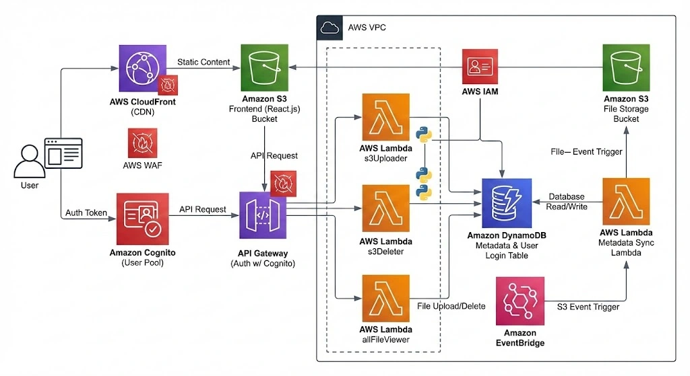
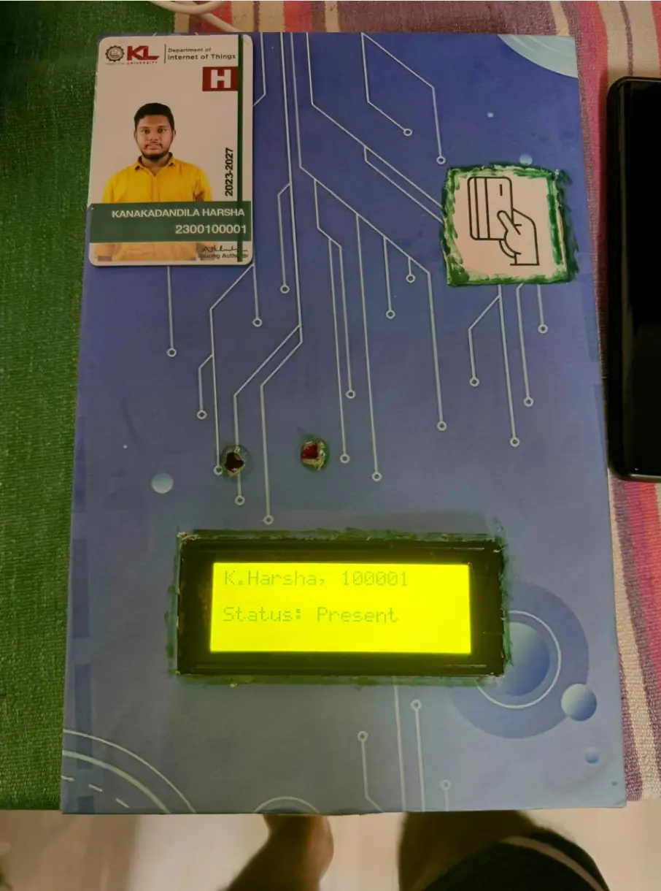
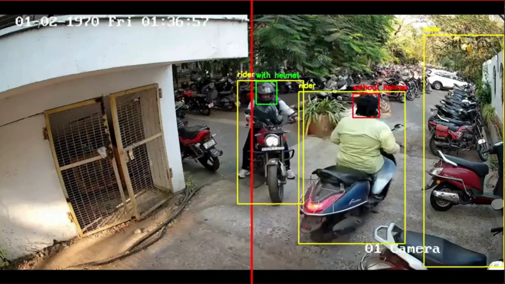
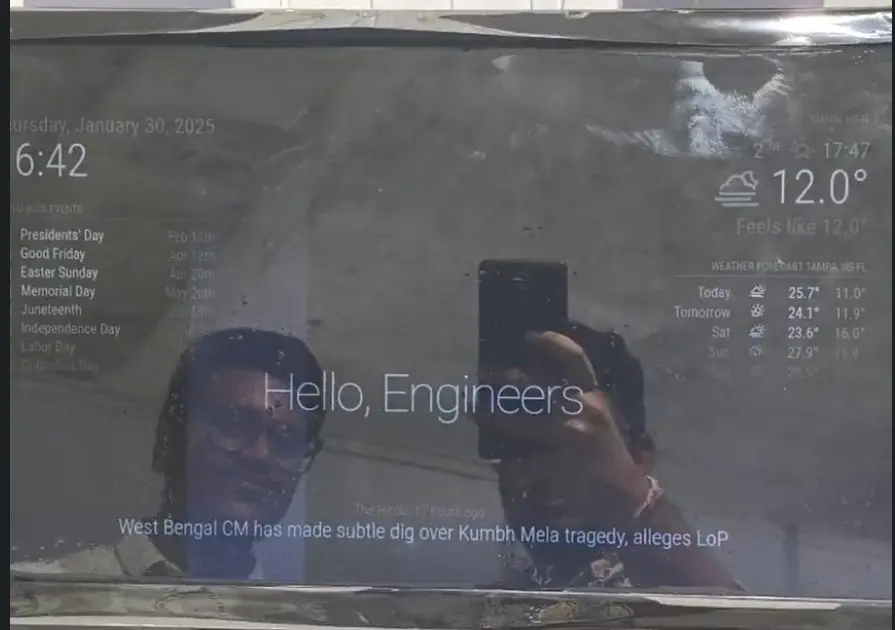

Engineered Solutions
CTC (Citizen Traffic Camera)
- Situation: Critical dashcam and crime footage is often lost on social media, while manual review backlogs prevent authorities from acting on public evidence.
- Task: Build an automated, verifiable pipeline to ingest, analyze, and categorize public incident reports for emergency response.
- Action: Deployed the app backend on EC2 with autoscaling and load balancing enabled, video processing is performed by AI pipeline using S3, SQS, Lambda with Gemini API for instant reports.
- Result: Delivered a scalable, cloud-native MVP that drastically reduces manual review time and provides authorities with actionable, AI-sorted incident data.
Python
AWS EC2
AWS RDS
AWS VPC
Serverless AWS
SQL
Source Code
More Info...


H-Drive: Pay-As-You-Store
- Situation: High costs and inefficiency in traditional fixed-storage models.
- Task: Architect a scalable, pay-for-what-you-use cloud storage platform.
- Action: Designed an event-driven architecture with S3, Lambda, DynamoDB, and API Gateway.
- Result: Delivered a highly available, cost-optimized storage pipeline.
AWS S3
AWS Lambda
DynamoDB
API Gateway
Source Code
More Info...

Smart Attendance System
- Situation: Manual attendance tracking was prone to errors and time-consuming.
- Task: Develop an automated, end-to-end IoT tracking system.
- Action: Built hardware with ESP32 & RFID, and a Node.js/Postgres backend.
- Result: Eliminated manual entry and improved attendance accuracy drastically.
ESP32
RFID
Node.js
PostgreSQL
IoT
Source Code
More Info...

Smart Traffic Monitoring
- Situation: Increasing traffic violations due to non-helmet riders.
- Task: Automate the detection and reporting of traffic violators.
- Action: Trained a YOLO object detection model to identify non-helmet riders and capture their number plates.
- Result: Streamlined the process of assigning challans and logging traffic analytics.
Python
YOLO
Computer Vision
OpenCV
Source Code
More Info...

Smart Mirror
- Situation: Need for a centralized dashboard to view daily information seamlessly.
- Task: Create an interactive, aesthetically pleasing smart mirror.
- Action: Programmed a Raspberry Pi to fetch and display weather, calendar, and news behind a two-way mirror.
- Result: Built a functional, sleek daily assistant that blends into home decor.
Raspberry Pi
Python
APIs
MagicMirror
Source Code
More Info...